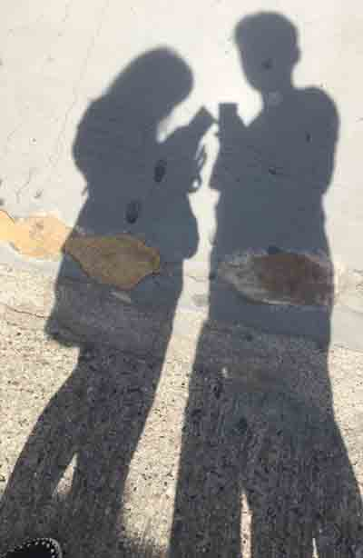

2016
Oct
21
第三天早上安排去看巴特婁之家，中午再去吃一次 Cerveceria catalana Tapas，巴特婁之家的英文是 Casa Batllo，在巴塞隆納你會看到很多 Casa 這個單字，它代表某某人之家的意思，像是米拉之家，英文就是 Casa Mila ，巴特婁之家外觀是一條巨龍的設計，不過我在它正面看不太出來，只覺每個窗戶看起來像兩個眼睛加鼻子，中間插著兩根不知道是什麼東西，一直等到我們上到屋頂才悟出這條龍，屋頂上可看出龍的背脊，旁邊還插著一把利劍，欣賞巴特婁的同時，請注意這棟房子很高，你必須一層一層的往上爬，其實蠻累的，到了巴特婁後陽台，太陽很烈，一整個非常的熱，曬完太陽回到巴特婁，又得再很上爬，請記得帶水跟充沛的體力。
巴特婁之家，成人票兩張台幣： 1,589 元
↓ 巴特婁之家相關圖片

↓巴特婁之家的位置。
看完巴特婁之家，下一站就是 Cerveceria catalana Tapa 餐廳，這家餐廳距離巴特婁之家不遠，走路 15 分鐘就到了，有鑑於第一次沒坐到 Bar 台，我們這天一進去餐廳，就直接跟店員說我們要坐 Bar 台，坐 Bar 台很方便，店員就在你前面，不管你是要點飲料，點餐，結帳，直接跟前面的店員說就行了，結帳找錢也很迅速，有什麼問題就直接問，避免店員走來走去不理你，在 Bar 台店員根本就無處可逃!
我們點了竹蛤、沙拉(有火腿、香菇，盧筍)、烤牛肉(青椒、麵包)、柳澄汁，還有一個我連食材都講不出的東東，在巴塞隆納點菜是有難度的，不只西班牙文看不懂，就連看英文也是很累 (一部分原因是自已英文也不夠強)，他們每一道菜都寫得很長，還沒看就有點累，再加上有些料理的專有名詞不太了解，光是一個"烤類"就有 grilled, brochette(烤肉串), roast，而我只學過 bake 跟 barbecue 啦 ... ，我們只好採用最簡單的方式點餐，就是先上網找好這家餐廳的餐點圖片，然後直接拿著店員看，大部分店員一看就知道是什麼東西了。
這道沙拉也是沒什麼青菜，巴塞隆納真的不容易吃到青菜，很多沙拉都會加上肉類食物，不過像這道菜有煮熟的西班牙火腿，原本火腿就很像臘肉了，煮熟後就跟臘肉一模一樣。
聖家堂
一般成人票兩張台幣：1,101 元
吃完飯，時間大約 1:30，我們透過 Moovit APP 查詢公車站牌，試著搭公車去聖家堂，在巴塞隆納搭公車很方便，先去地鐵站買一張 T10 (選擇 zone1)， T10 是一張可以多人共用的車票，兩個人搭車就刷兩次票就行了，有了 T10 我們就可以搭公車跟地鐵，非常方便，另一個選擇是買觀光巴士一日券，巴塞隆納的觀光巴士很多，各大觀光景點都有站牌，搭觀光巴士也是很方便的選擇，缺點是一日券價格較貴，像我們一天只跑三 ~ 四個點，坐公站或地鐵是比較划算的。
一下公車站轉個彎，你就會看到一座很大很廣的建築物，網路上很多人說這裡扒手、騙子很多要小心，但是我們到現場只看到一些小攤販在賣小飾品，或是有人在賣自拍棒，到是沒遇到壞人，或許那些小偷都改行去擺攤了吧。
聖家堂真的是非常大，拍照都要蹲在地上才能拍到全景，而且要一直抬頭看，本來想說抬頭久了，等一下脖子會不會痠，結果我的脖子完全沒事，反而是我的腰好痠，原來一直抬頭會導致腰痠，後來一整天腰都有點不舒服。
聖家堂正門有兩隻小海龜，海龜背上是兩根超大的柱子，這兩隻海龜真辛苦要撐起整棟建築物，正門兩邊都是一些耶穌相關的雕刻，一樣刻得很複雜，誇張的連泥土跟草的樣子都雕出來，反正造成我不知道要看哪裡。
聖家堂長得很複雜，遠遠看根本看不出建築物表面是有什麼，買明信片的時候，看聖家堂的照片，也是一堆凹凹凸凸，搞不清楚到底是什麼，而當你想近距離觀察，卻又只能看到整個建築物的一小部分，這裡真的只來一次的話是不太夠的。
從聖家堂後門出來，那時陽光正烈，沒地方躲太陽，我隨手往影子的方向一拍，感覺還挺不錯的↓
↓聖家堂照片

米拉之家
一般成人票兩張台幣：1,504 元
四點左右離開聖家堂，我們再度搭上公車往米拉之家的方向開去，米拉之家是以外星人為主題蓋的，傳言米拉之家曾經被評為世界上最醜的建築物，我個人還蠻贊同的 XD ，我第一眼看到米拉之家，就覺得它窗戶的欄桿超級醜的，它的欄桿像是隨手捏一捏再黏起來，奇醜無比。
米拉之家的正門是快速通關的入口，如果你買的是一般的成人票，那麼你必須從旁邊那條路上的側門進場，有蠻多人跟我們一樣，沒注意看指示牌就想從正門進去，當然是直接被請去旁邊的....
米拉之家這棟建築也是很大一間，它有一大部分的房間是用來出租的，所以我們沒辦法看到室內的所有房間，一進入米拉之家就是真接上到屋頂，它的屋頂設計真的可以跟奎爾宮比爛了，米拉之家的屋頂樓梯非常的多，而且階梯前緣是傾斜的，感覺就是個陷井，那天到米拉的時候已經 五點多了，身體也有點累，我都要特別小心的慢慢走。